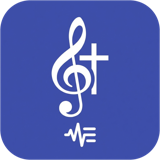

GestorMúsica
Plataforma web para ministérios de música que reúne o que antes ficava espalhado entre grupos de WhatsApp, PDFs e planilhas: repertório de cifras, escalas da equipe, planejamento de cultos e projeção de letras. A web platform for church music teams that brings together what used to be scattered across WhatsApp groups, PDFs and spreadsheets: a chord-sheet library, team schedules, service planning and lyric projection.
- Editor de cifras com transposição e detecção automática de tom, importação de cifras e geração de PDFChord editor with transposition and automatic key detection, chord sheet import and PDF generation
- Slides de projeção gerados a partir das cifras, com modo teleprompterProjection slides generated from the chord sheets, with a teleprompter mode
- Escalas com confirmação de presença por notificação e relatórios de participaçãoSchedules with attendance confirmation via notifications and participation reports
| PapelRole | Fundadora e desenvolvedora (projeto individual)Founder and developer (solo project) |
|---|---|
| PeríodoPeriod | jan 2026 – atualJan 2026 – present |
| Stack |